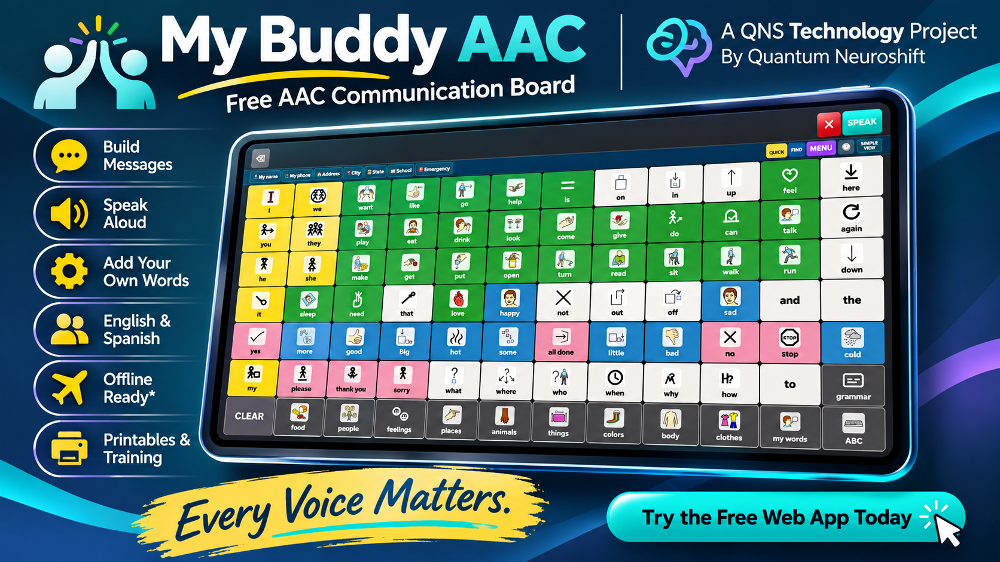

It Took Us Almost Two Years to Get an AAC Device. That’s Why I Built My Buddy.

It took our family almost two years to get a communication device for our child. We went to appointments. We got insurance denials. We kept going. We eventually got the device, but our child had things to say on every one of those days we were waiting.
That’s the reason I built My Buddy AAC. Every child deserves a voice now, on whatever device their family can afford.
I know what it took for us to get an AAC device through disability insurance. I also know that going through that process is out of reach for some families. Buying something yourself can bring another set of barriers. Some of the feature-rich apps I looked at required an iPad or cost around $200. If there’s already a phone or a tablet in the house, I want a family to be able to pick it up, open a browser, and try a communication board that afternoon.
What I wanted families to be able to use
AAC stands for augmentative and alternative communication. It can be a printed board someone points to or an app that speaks the words they choose. My Buddy is a free AAC app I’m building through QNS Technology, part of Quantum Neuroshift. On the web board, you tap words or symbols to put together a message, then tap Speak to hear it aloud. There’s no account to create.
I look at what a $200 AAC app lets someone do and ask how much of that I can make available for free. Can a parent add a photo or a word their child uses at home? Can a child find a word in the same place they found it yesterday? Can they put together a sentence nobody thought to make a button for?
I ran into that last question while testing “go to school.” I could find go and school, but I couldn’t find to. I already had a bunch of ready-made phrases on the board. What I needed was a little word that would let someone make a lot of different sentences. I want a child to be able to tell me they want to go somewhere I haven’t thought of yet. That’s the kind of thing I mean when I say I want the free board to have depth.
Start with the device you have
My Buddy has English and Spanish boards and a Simple View with bigger buttons for smaller screens. There’s a guided tour that lets you practice on the actual board, plus black-and-white printables you can use with the printer you already have. I’m still testing across devices. On compatible devices, the board can reopen offline after the initial setup, and I’m checking which voices work in airplane mode because being able to open the board and being able to hear it speak are both important.
If your family is waiting for a device right now, you can open My Buddy today and see how it works on what you have. If something gets in your way, tell me what device you used and what you were trying to say. That’s the feedback I want as I keep building it.
← Back to the blog